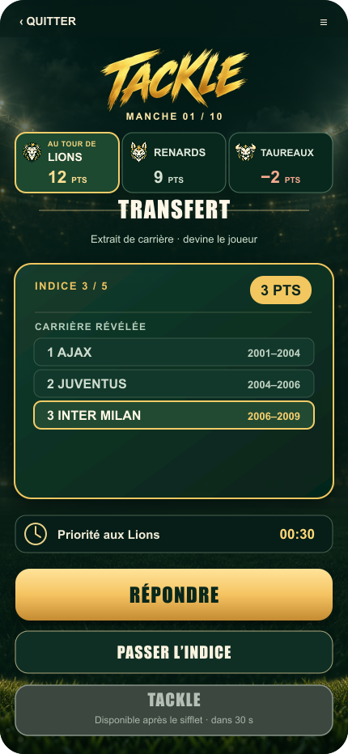

Les deux signaux du chrono
Un double sifflet ouvre les 30 secondes de l'équipe active. Un sifflet plus marqué ouvre les 15 secondes de Tackle.

Un double sifflet ouvre les 30 secondes de l'équipe active. Un sifflet plus marqué ouvre les 15 secondes de Tackle.
